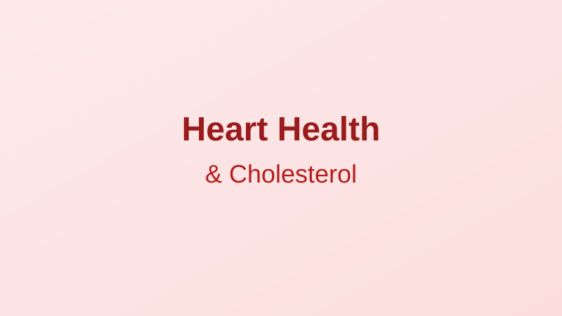

Understanding Heart Health: What Your Cholesterol Numbers Really Mean
Written by Sarah Mitchell
Health & Wellness Writer • Published: March 25, 2026 • 7 min read
Heart disease is the leading cause of death in the United States, claiming approximately 695,000 lives every year — that's 1 in every 5 deaths, according to the CDC. And cholesterol plays a central role in the story.
Yet despite how often we hear about cholesterol, many Americans don't fully understand what their numbers mean or what they can do about them. Nearly 94 million U.S. adults age 20 or older have total cholesterol levels above 200 mg/dL.
What Is Cholesterol, Exactly?
Cholesterol is a waxy, fat-like substance found in every cell of your body. Your body actually needs it to build cells, produce hormones, and make vitamin D. The issue isn't cholesterol itself — it's having too much of the wrong kind in your blood.
There are two main types:
- LDL (Low-Density Lipoprotein): Often called "bad" cholesterol. High levels can lead to plaque buildup in arteries, increasing the risk of heart attack and stroke. The American Heart Association recommends LDL levels below 100 mg/dL
- HDL (High-Density Lipoprotein): Often called "good" cholesterol. HDL helps remove LDL from the bloodstream and transport it to the liver for disposal. Higher levels (60 mg/dL or above) are considered protective
- Triglycerides: A type of fat in the blood. High triglycerides combined with high LDL or low HDL can increase heart disease risk. Normal is below 150 mg/dL
Understanding Your Numbers
| Measurement | Desirable | Borderline | High Risk |
|---|---|---|---|
| Total Cholesterol | < 200 | 200-239 | 240+ |
| LDL | < 100 | 130-159 | 160+ |
| HDL | 60+ | 40-59 | < 40 |
| Triglycerides | < 150 | 150-199 | 200+ |
All values in mg/dL. Source: American Heart Association
What You Can Do
- Get tested regularly: Adults 20+ should have cholesterol checked every 4-6 years; more frequently if you have risk factors
- Eat heart-healthy fats: Replace saturated fats (butter, red meat) with unsaturated fats (olive oil, avocados, nuts, fatty fish)
- Increase soluble fiber: Oatmeal, beans, apples, and Brussels sprouts can help lower LDL
- Exercise regularly: Physical activity can raise HDL and lower triglycerides
- Maintain a healthy weight: Even modest weight loss (5-10% of body weight) can improve cholesterol levels
- Don't smoke: Quitting smoking improves HDL levels and benefits overall heart health within weeks
- Talk to your doctor about medication: For some people, lifestyle changes alone aren't enough, and statins or other medications may be recommended
Disclaimer: This article is for informational purposes only and is not medical advice. Cholesterol management should be discussed with your healthcare provider, who can assess your individual risk factors.
Sarah Mitchell
Sarah is a health and wellness writer focused on making scientific research accessible to everyday readers.